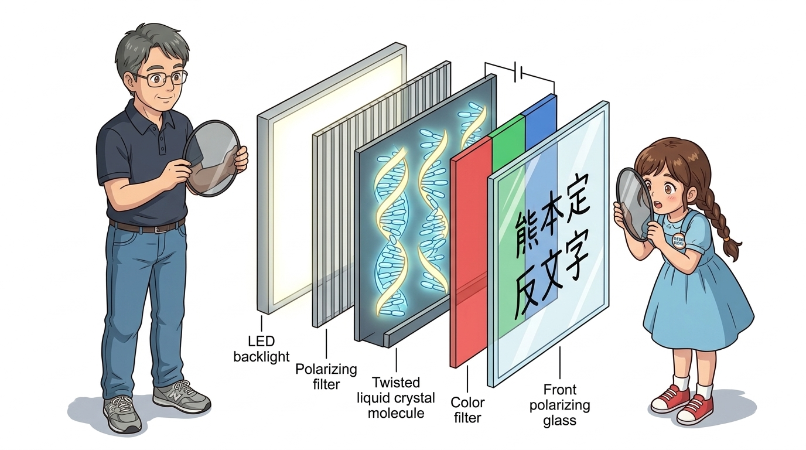
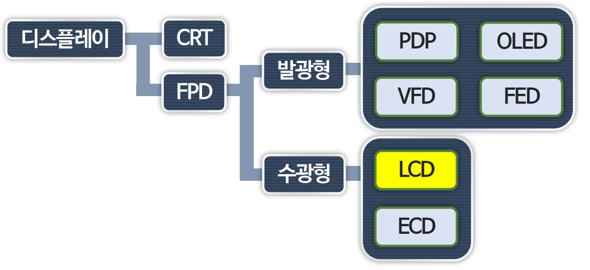
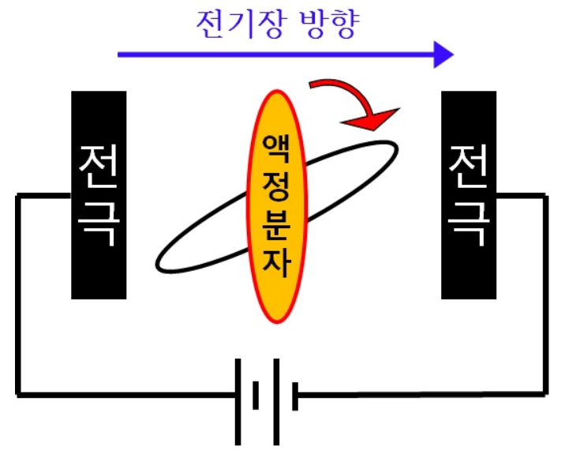
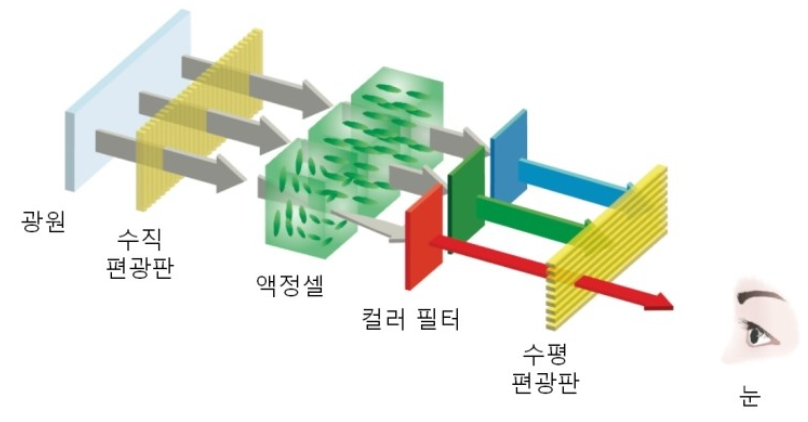
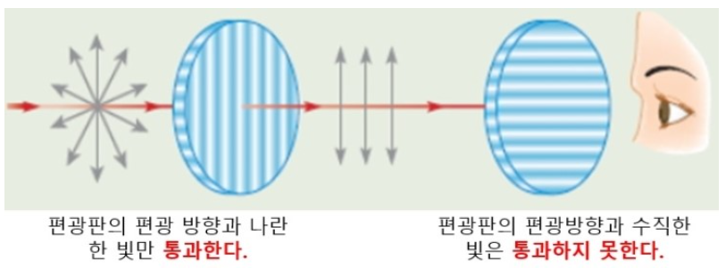
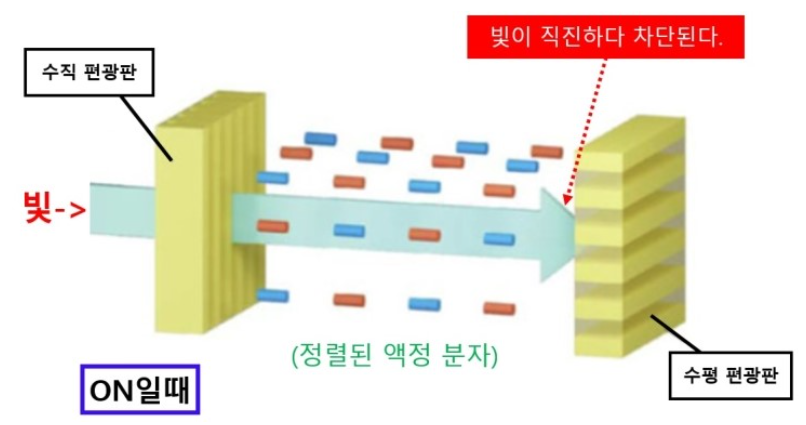
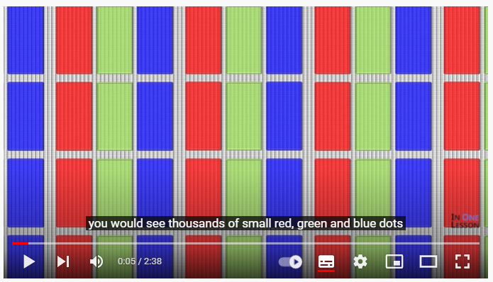
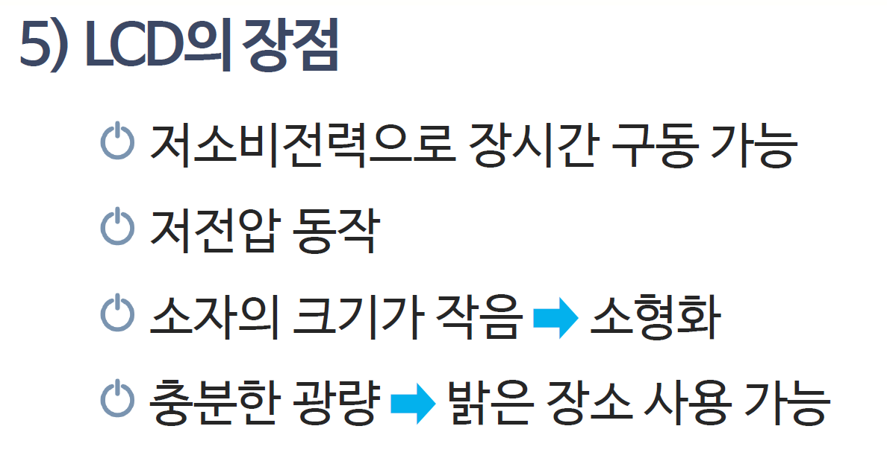
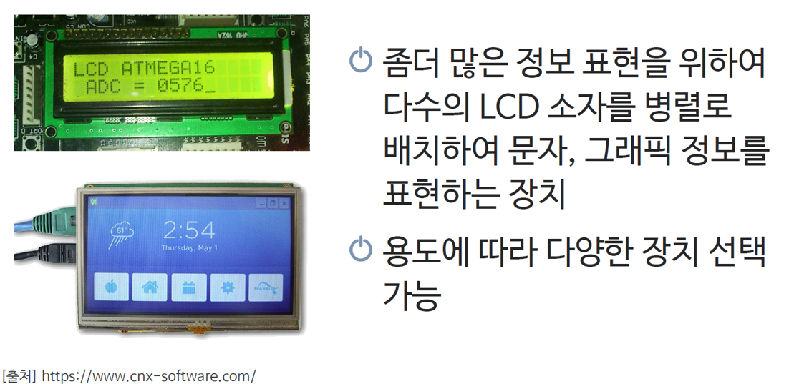

067_LCD란_문자디스플레이 📺✨
빛과 결정의 물리학! 액정(Liquid Crystal)과 편광판이 만들어내는 시각 인터페이스
LCD의 광학적 작동 원리, 백라이트 구조, 패널의 진화 과정(TN, TFT, IPS), 1602 캐릭터 LCD의 특징을 학습합니다.

- 🖥️ 강의 슬라이드: slides.md
1. 인간과 컴퓨터를 잇는 시각의 창: 디스플레이 🖥️
컴퓨터와 마이크로컨트롤러가 계산한 수많은 센서 데이터와 프로그램 상태를 사람이 직관적으로 읽을 수 있도록 변환해 주는 장치입니다.
👧 도로시: “지니야! 휴대폰, 모니터, 전자계산기 화면에 나오는 글자는 전구를 촘촘히 박은 거야? 어떻게 선명한 글씨가 떠?”
🐱 지니: “그 비밀은 바로 액체처럼 흐르면서도 보석 결정처럼 규칙적인 ‘액정(Liquid Crystal)’에 있어! LCD 화면의 원리를 함께 파헤쳐보자!”
🐶 토토: “멍멍! (선글라스 끼고 빛을 관찰하자 멍!)”

📌 전자 디스플레이의 발전 계보
- CRT (음극선관, 브라운관): 전자총으로 형광 물질을 타격하는 부피가 크고 무거운 초창기 방식
- LCD (액정 디스플레이): 얇고 가벼우며 전력 소모가 적어 현대 전자기기의 표준으로 자리매김
- OLED / MicroLED: 소자 스스로 빛을 내어 완벽한 검은색과 초슬림 폼팩터를 구현하는 차세대 디스플레이
2. LCD(Liquid Crystal Display)란? 💧💎
LCD는 Liquid Crystal Display의 약자로, 우리말로는 ‘액정 표시 장치’라고 부릅니다.

[!NOTE] 액정(Liquid Crystal)이란?
액체(Liquid)처럼 자유롭게 흐르는 유동성을 가지면서도, 고체 결정(Crystal)처럼 분자들이 일정한 방향으로 정렬되어 있는 신비로운 중간 상태의 물질입니다. 외부에서 전기장(전압)을 걸어주면 분자의 정렬 방향이 순식간에 바뀌는 전기광학적 특성을 지닙니다.
3. LCD는 스스로 빛나지 못해요: 백라이트(Backlight) 💡
놀랍게도 액정 물질 자체는 빛을 발생시키는 발광체가 아니라, 빛을 통과시키거나 차단하는 ‘광학 셔터(Optical Shutter)’ 역할을 수행합니다.

- 백라이트 유닛 (BLU, Backlight Unit): LCD 패널 뒷면에서 균일하고 밝은 백색광을 쏴주는 광원 (주로 고효율 백색 LED 사용)
- 도광판 및 확산 시트: 점광원 형태의 LED 빛을 화면 전체에 얼룩 없이 고르게 퍼뜨려주는 광학 필름 계층
- 백라이트에서 출발한 빛이 액정 셔터와 컬러 필터를 거치며 우리가 보는 화면이 만들어집니다.
4. 빛을 걸러내는 마법의 격자: ‘편광판(Polarizer)’ 🕶️
자연광이나 형광등의 빛은 진행 방향에 수직인 모든 360도 방향으로 불규칙하게 진동하는 전자기파입니다.

📌 편광(Polarization)의 메커니즘
- 편광 필터: 미세한 슬릿(빗살) 구조를 가지고 있어, 특정 방향으로 진동하는 빛 성분만 통과시키고 나머지는 흡수/차단합니다.
- 직교 편광 (Crossed Nicols): 편광축이 90도 교차된 두 장의 편광판을 겹치면 첫 번째 판을 통과한 빛이 두 번째 판에 완벽히 차단되어 화면이 칠흑같이 어두워집니다.
5. 전압으로 빛의 밸브를 여닫는 액정 셔터 🚪✨
LCD는 두 편광판 사이에 액정 층을 배치하고, 전압 유무에 따라 빛의 진동축을 회전시키는 원리로 작동합니다.

| 전압 인가 상태 | 액정 분자의 배열 | 편광된 빛의 변화 | 화면 상태 (TN 모드 기준) |
|---|---|---|---|
| OFF (전압 없음) | 나선형으로 90도 꼬인 구조 | 빛이 액정을 따라 90도 회전 통과 | 두 번째 편광판 통과 ➡️ 화면 밝음 (White) |
| ON (전압 인가) | 전기장 방향으로 꼿꼿이 정렬 | 빛의 편광 방향이 유지됨 | 두 번째 편광판에 차단 ➡️ 화면 어두움 (Black) |
6. LCD 패널 기술의 눈부신 진화: TN ➡️ TFT ➡️ IPS 🚀
더 빠르고, 더 선명하며, 어느 각도에서나 왜곡 없는 화면을 만들기 위해 액정 구동 방식이 끊임없이 진화했습니다.

- TN (Twisted Nematic): 가장 초창기 구조로 반응 속도가 빠르고 단가가 저렴하지만, 상하좌우 시야각이 좁아 옆에서 보면 색이 반전됩니다.
- TFT (Thin Film Transistor): 각 픽셀마다 미세한 박막 트랜지스터 스위치를 배치하여 깜빡임 없는 고해상도 그래픽을 실현했습니다.
- IPS (In-Plane Switching): 액정 분자를 평면상에서 수평으로 회전시켜 178도의 광시야각과 풍부한 색재현율을 제공합니다 (현대 스마트폰, 모니터의 핵심).
7. 아두이노의 단짝: 1602 캐릭터 LCD 화면 📟
임베디드 프로젝트에서 문자 정보 출력을 위해 가장 널리 사용되는 산업 표준 디스플레이입니다.

- 규격 해석: 가로 16문자, 세로 2행(Line) = 동시에 총 32개의 영문자/숫자/기호 표현 가능
- 5×8 도트 매트릭스 폰트: 한 글자는 5×8=40개의 미세 액정 도트로 구성되어 알파벳과 숫자를 선명하게 표시합니다.
- HD44780 컨트롤러 내장: 아두이노로부터 아스키(ASCII) 코드 값만 전달받으면 자체 폰트 ROM을 참조하여 화면에 글자를 그려줍니다.
8. 1602 LCD의 내부 블록도 및 인터페이스 📐
1602 LCD 모듈 뒷면에는 디스플레이 제어를 위한 16개의 접속 핀이 마련되어 있습니다.

- 전원부: VSS(GND), VDD(5V), V0(화면 대비 명암 조절 단자)
- 제어 신호선: RS(명령어/데이터 레지스터 선택), R/W(읽기/쓰기), E(동기화 Enable 펄스)
- 데이터 버스: D0 ~ D7 (8비트 또는 4비트 병렬 전송 버스)
- 백라이트 전원: A(LED 양극, 5V), K(LED 음극, GND)
🌟 도로시와 지니의 이번 시간 핵심 정리! 🏆
축하합니다! 액정 디스플레이의 심오한 물리 광학 원리와 1602 모듈의 구조를 완벽히 이해했습니다.

📋 핵심 요약 체크리스트
- 액정의 본질: 액체와 고체의 성질을 동시에 지니며, 전압에 따라 분자 정렬이 바뀌는 광학 스위치입니다.
- 편광판과 백라이트: 자체 발광하지 못하는 액정 층 전후로 편광판과 BLU를 결합하여 명암비를 생성합니다.
- 1602 캐릭터 LCD: 16×2 글자를 표시할 수 있는 HD44780 기반의 신뢰성 높은 텍스트 모듈입니다.
👧 도로시: “LCD 화면의 과학 원리를 알고 나니 시계나 전자레인지 화면이 완전히 새로워 보여! 다음 시간엔 아두이노 코드로 내 이름을 직접 띄워볼래!”
🐱 지니: “훌륭해! 다음 시간에는 1602 LCD에 글자를 직접 출력하고 제어하는 ‘LCD 출력 프로그래밍’을 본격적으로 실습해 보자!”